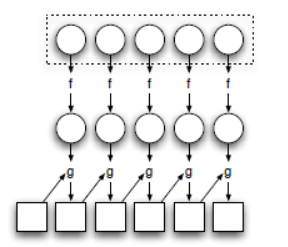
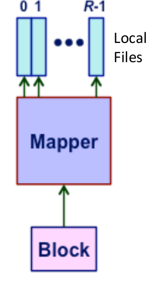
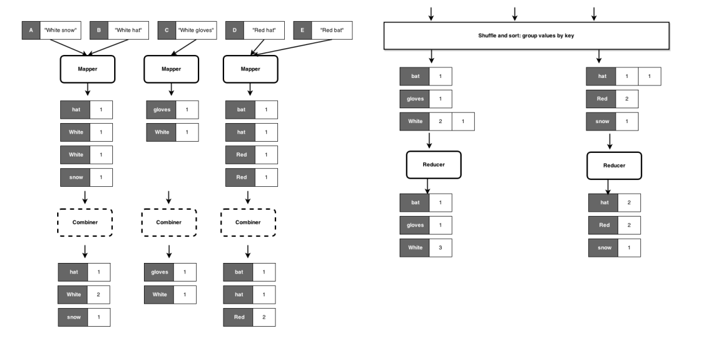
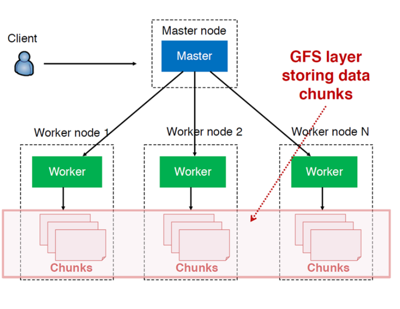
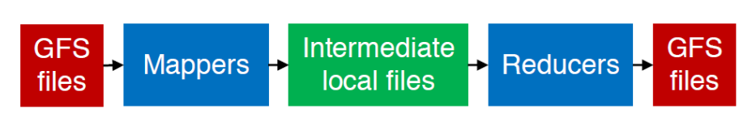

§ Clouds: MapReduce
MapReduce is a programming model and an associated implementation for processing and generating big data sets with a parallel, distributed algorithm on a cluster.
§ Key Ideas behind MapReduce
§ Scaling out instead of scaling up
If we have workloads that are data-intensive, it is preferable to do it on a large number of commodity low-end servers (Scaling out) instead of a small number of high-end servers (Scaling up). This is because the scale-up approach is costly since the
costs of machines do not scale linearly and the costs associated with the operational issues like energy required for cooling etc. are additional overheads that turn out to be less flexible for the latter. Thus, most MapReduce applications are built for low-end servers. Scaling-out leads to the following implications:
- Processing Data is quick, but I/O is really slow due to the network bottleneck imposed by low bandwidth
- There is flexibility in what the computers end up sharing → In a shared-nothing architecture, all the systems are performing individual computations and only haring the relevant data as managed by a distributed file system
§ Failure is the Norm, not the Exception
In clusters, failures are not only inevitable but commonplace. Mature implementations of the MapReduce programming model are able to robustly cope with failures through a number of mechanisms such as automatic task restarts on different cluster nodes.
§ Data Locality Principle
In traditional HPC applications, the servers are segregated into
storage and
compute nodes linked together by a high-capacity inter-connect. However, many data-intensive workloads do not require a high processor capability and so, this segregation creates a bottleneck. It is more efficient to move the processing around instead of the data by co-locating the processor and the data storage and running the job on the processor directly attached to the data,
managing synchronization through a distributed file system.
§ Sequentially Process Data
Data-intensive applications mean that the datasets are large and thus, must be held on disks. However, the seek times for random data access on disks are fundamentally limited. Thus, it is more efficient to avoid this and process the data sequentially in batches, which is what the MapReduce architecture is based upon.
§ Hide the System Level Details from Developers
MapReduce abstracts the system-level details and provides a framework that the developer can use, thus, separating the lower-level details of the computations from the commands to do them. Thus, the execution framework needs to be designed only once.
§ Scalability
We can define scalability along two dimensions:
- Given twice the amount of Data, the same algorithm should take at-most twice as long to run, if everything else is the same
- Given twice the number of processors, the same algorithm should take at-most half the time to run
These settings should, ideally, work for a high range of data → MB to PB → and all kinds of clusters. Moreover, the ideal algorithm should not require further tuning. WHile MapReduce does not achieve all of it, it is a step in this direction
§ MapReduce and Functional Programming
The key feature of functional languages is the concept of
higher-order functions that can accept other functions as arguments. Two functions that are common are:
- Map → Takes a function f as an input and applies it to all elements in a list.
- Fold → Takes a function g and a first data as inputs and applies it to the first item in the list. the result of this computation is stored as an intermediate variable and then applied as an input to the second item, and so on.
This is summarized in the figure below:

So, Map is a
transformation on the input functions that can be parallelized in a straightforward manner since it happens on all the items in a list, while Fold is an aggregation operation that needs to happen on individual elements, that must be brought together before applying it. This is the essence of MapReduce, which can be translated to the following steps:
- Apply a user-defined computation in a parallel manner on all the elements in a list
- Aggregate intermediate results by another user-specified computation
§ MapReduce Working
The input to a job is data stored on the underlying distributed file system. To this data, a mapper and a reducer are defined a follows :
- Mapper → (k!,v1)→[(k′,v′)]
- Reducer → [(k′,[v′])]→[(k2,v2)]
The mapper generates an arbitrary number of intermediate key-value pairs for every input key-value pair, distributed across multiple files. The reducer is applied to all the values associated with an intermediate key - which is sort-of an inherent grouby operation - and generates an output key-value pair. These output key-value pairs from each reducer are written persistently back onto the distributed file system. The files in the file system are of the same number as the number of reducers, and these output files can further serve as an input to another Mapper.
A classic example of MapReduce is a program to count the words n files, and this would go as follows;
- The input to the mapper is of the form -
(document_id, document_text) - where each document has a unique ID - The mapper tokenizes the document and emits an intermediate key-value pair for every word in a document, where the key is the word and the value is the 1 in the vanilla version, or count if we apply a combiner. So, for this implementation let's say it is the count of the word in that document.
- The shuffler guarantees that all the values associated with the same key are brought together to one reducer, and ensure this happens for all the keys. Thus, every pair corresponding to the word the would come to the same reducer.
- The reducer emits the word and its count as the output, which is in the form of an individual document.
§ Partitioners
These determine which reducer is responsible for which data key. The mapper writes the key-value pairs to a partitioning block and the partitioner maps each key to an integer i \in [0,R], which is then used to send the pairs to R reducers. We can also use URLs, hex hashes, etc. to create the identity of the reducers

§ Combiners
These are just mini-reducers. Their input is the same as reducers and the output is the same as mappers. So, in the counting example, the mapper would generate the key-value pairs in the form of [word, 1] for each word. To this, we can add combiners that aggregate the counts for each file while still maintaining the output format for the mappers, as shown below. This kind of pre-aggregation saves network time.

However, there are certain cautionary notes on combiners:
- The correctness of the algorithm cannot depend on computation (or even execution) of the combiners
- They don't work for all problems. e.g. Mean of letters
§ K-means in MapReduce
A classic example of Distributed algorithms would be K-means, which is an iterative task. In this case of an iterative task, we need a driver to run the MapReduce multiple times and check for convergence. Each map-reduce iteration would be as follows:
- We would need a file containing the co-ordinates of each centroid
- The input to the mapper would be the data points, and each mapper would compute the distance of the point from each cluster. the output of the mapper would be (cluster, point)
- the reduce would be receive the data points grouped by a cluster ids, and it ou compute the centroid, thus, producing the output (cluster, centroid)
§ Architecture of MapReduce
The Architecture is based on the
Google File-System (GFS), and the run is as follows:
- Master breaks work into tasks and schedules them on workers dynamically
- Workers implement the MapReduce Functionality on the GFS server daemons

The following diagram shows the flow of MapReduce from the paper:

It can be explained as follows :
- Library splits files into 16-64MB pieces
- Master picks workers and assigns map or reduce task (M map, R reduce tasks)
- Map worker reads input split, calls map function, buffers map output in memory
- Periodically, in-memory data flushed to disk & master is informed of disk location (Partitioning)
- Master notifies reduce worker of location, reduce worker reads map output files, sorts data
- Reduce worker iterates over sorted data, passes each unique key, list of values to reduce function. The output of reduced function written out to files.
§ Fault Tolerance
- The mapper spreads tasks over GFS Replicas of inputs so that even if a mapper crashes, a copy of the output is available to reducers through re-runs, and the reducers are notified of the re-run
- If the reducer crashes, the tasks that were completed are stored in GFS with replicas and the ones still remaining are re-run.
§ Load-Balancing
- Scales linearly with data → as required
- For stragglers i.e the tasks that take a lot of time, the workers who have already finished a task are assigned new tasks → the no. of tasks are always greater than the number of workers